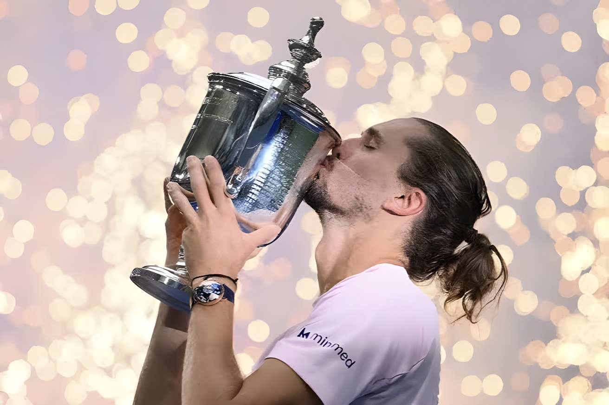

Dimanche 13 septembre 2026, l'Allemand Alexander Zverev, tête de série n°1, a remporté l'US Open en battant l'Américain Ben Shelton en quatre sets (6-3, 7-6(2), 5-7, 6-2), au terme d'une finale de 3h33 sur le court Arthur Ashe. Six ans après avoir laissé filer le titre new-yorkais face à Dominic Thiem alors qu'il menait deux sets à zéro, le Hambourgeois de 29 ans décroche son deuxième Grand Chelem de la saison après Roland-Garros, et devient seulement le quatrième joueur de l'ère Open à remporter ses deux premiers titres du Grand Chelem au cours de la même année.
En finale, Alexander Zverev a pris le meilleur départ possible en s'adjugeant la première manche 6-3, avant de devoir hausser son niveau de jeu dans un deuxième set disputé, remporté au tie-break 7-6(2). Ben Shelton, porté par le public de l'Arthur Ashe Stadium et disputant sa toute première finale de Grand Chelem, a alors haussé le ton pour recoller à une manche partout (5-7). Mais l'Allemand a rapidement repris le contrôle, breakant d'entrée dans le quatrième set puis consolidant son avance pour conclure 6-2 et soulever, enfin, le trophée qui lui avait échappé six ans plus tôt.
Ce sacre est d'autant plus marquant que le tournoi avait mal commencé pour la tête de série n°1 : au premier tour, Zverev n'est passé qu'à deux points de devenir le premier numéro un mondial éliminé dès le premier tour d'un Grand Chelem depuis 2003, avant de s'imposer en cinq sets et 4h52 face à l'Italien Lorenzo Sonego. Il a dû rééditer l'exploit au tour suivant, en cinq sets également, face au Français Quentin Halys, avant de hausser considérablement son niveau de jeu dans la seconde semaine du tournoi.
Zverev sauve deux balles de match face à l'Italien Lorenzo Sonego et s'impose 6-4, 3-6, 6-7(7), 7-5, 6-4 en 4h52, au terme du match le plus long de sa carrière au 1er tour d'un Majeur.
Nouveau marathon en cinq sets, cette fois face au Français Quentin Halys, avant que l'Allemand ne trouve enfin son rythme de croisière.
Zverev domine sans trembler le Néerlandais Botic van de Zandschulp 6-2, 7-5, 6-1 pour valider sa place dans le dernier carré.
Mené dans deux tie-breaks qu'il aurait pu perdre, Zverev renverse Karen Khachanov 6-3, 7-6(7), 7-6(6) et rejoint sa sixième finale de Grand Chelem, la troisième consécutive cette saison.
L'Allemand domine Ben Shelton 6-3, 7-6(2), 5-7, 6-2 en 3h33 et soulève son premier trophée à l'US Open.
Ce sacre efface un souvenir douloureux : en 2020, Alexander Zverev avait mené deux sets à rien et servi pour le titre en finale de l'US Open, avant de s'effondrer face à l'Autrichien Dominic Thiem. Il avait ensuite perdu deux autres finales de Grand Chelem, à Roland-Garros en 2024 face à Carlos Alcaraz, puis à l'Open d'Australie en 2025 face à Jannik Sinner, avant de mettre fin à cette série noire en juin dernier à Paris. Cette victoire à New York confirme que son sacre parisien n'était pas un accident de parcours.
| Acteur | Position |
|---|---|
| Ben Shelton | Finaliste américain, monte à la 4e place mondiale grâce à ce parcours |
| Karen Khachanov | Adversaire en demi-finale, battu au terme de deux tie-breaks accrochés |
| Jannik Sinner | Numéro un mondial, absent du tournoi sur blessure, toujours en tête du classement ATP |
| Boris Becker | Seul autre Allemand vainqueur de l'US Open, en 1989 |
| Craig Tiley | Nouveau directeur de l'USTA, remercié par Zverev et Shelton lors des discours |
« Nous avons attendu 30 ans avant de remporter un titre du Grand Chelem, et nous en avons gagné deux en l'espace de trois mois. »
— Alexander Zverev, après sa victoire, 13 septembre 2026Avec une demi-finale à l'Open d'Australie, le titre à Roland-Garros, une finale perdue à Wimbledon et désormais le sacre à l'US Open, Alexander Zverev signe la saison la plus aboutie de sa carrière sur la scène des Grands Chelems, avec un bilan de 25 victoires pour seulement 2 défaites dans ces tournois en 2026. Il devient également le deuxième Allemand de l'ère Open, après Boris Becker, à remporter plusieurs titres du Grand Chelem.
À 29 ans, Alexander Zverev a mis fin à des années de désillusions en Grand Chelem en l'espace de trois mois à peine, effaçant sur ce même court Arthur Ashe le souvenir de sa désillusion de 2020. Mais l'histoire n'est pas encore complètement réécrite : la place de numéro un mondial, qui semblait à portée de main dès 2022 avant une grave blessure au genou, continue de lui échapper de justesse. Reste que la dynamique a changé de camp : pour la première fois de sa carrière, c'est lui qui pousse le numéro un mondial, et non l'inverse, à l'approche des Masters de fin de saison à Turin.
Am Sonntag, den 13. September 2026, gewann der an Position eins gesetzte Deutsche Alexander Zverev die US Open, indem er den Amerikaner Ben Shelton nach 3 Stunden und 33 Minuten auf dem Arthur-Ashe-Court in vier Sätzen (6:3, 7:6(2), 5:7, 6:2) besiegte. Sechs Jahre nachdem er den New Yorker Titel trotz einer 2:0-Satzführung gegen Dominic Thiem noch aus der Hand gegeben hatte, sichert sich der 29-jährige Hamburger nach Roland Garros seinen zweiten Grand-Slam-Titel der Saison und wird erst der vierte Spieler der Open Era, der seine ersten beiden Grand-Slam-Titel im selben Kalenderjahr gewinnt.
Im Finale erwischte Alexander Zverev den bestmöglichen Start und sicherte sich den ersten Satz mit 6:3, bevor er im hart umkämpften zweiten Satz sein Niveau steigern musste, den er im Tiebreak mit 7:6(2) gewann. Ben Shelton, angetrieben vom Publikum im Arthur-Ashe-Stadium und in seinem allerersten Grand-Slam-Finale, verkürzte daraufhin auf 1:2 Sätze (5:7). Doch der Deutsche übernahm rasch wieder die Kontrolle, brach im vierten Satz sofort zu Beginn den Aufschlag seines Gegners und baute seinen Vorsprung aus, um mit 6:2 abzuschließen und endlich die Trophäe zu stemmen, die ihm sechs Jahre zuvor entglitten war.
Dieser Triumph ist umso bemerkenswerter, als das Turnier für den topgesetzten Zverev denkbar schlecht begann: In der ersten Runde war er nur zwei Punkte davon entfernt, seit 2003 der erste Weltranglistenerste zu werden, der bereits in der ersten Runde eines Grand-Slam-Turniers ausscheidet, bevor er sich in fünf Sätzen und 4:52 Stunden gegen den Italiener Lorenzo Sonego durchsetzte. In der nächsten Runde musste er dieses Kunststück erneut vollbringen, ebenfalls über fünf Sätze, gegen den Franzosen Quentin Halys, bevor er in der zweiten Turnierwoche sein Niveau deutlich steigerte.
Zverev wehrt zwei Matchbälle gegen den Italiener Lorenzo Sonego ab und gewinnt 6:4, 3:6, 6:7(7), 7:5, 6:4 nach 4:52 Stunden – dem längsten Erstrundenmatch seiner Karriere bei einem Grand-Slam-Turnier.
Erneut ein Fünf-Satz-Marathon, diesmal gegen den Franzosen Quentin Halys, bevor der Deutsche endlich seinen Rhythmus findet.
Zverev dominiert den Niederländer Botic van de Zandschulp souverän mit 6:2, 7:5, 6:1 und zieht damit ins Halbfinale ein.
Nach zwei Tiebreaks, die er hätte verlieren können, dreht Zverev die Partie gegen Karen Khachanov und gewinnt 6:3, 7:6(7), 7:6(6) – sein sechstes Grand-Slam-Finale, das dritte in Folge in dieser Saison.
Der Deutsche bezwingt Ben Shelton mit 6:3, 7:6(2), 5:7, 6:2 nach 3:33 Stunden und gewinnt seinen ersten Titel bei den US Open.
Dieser Triumph tilgt eine schmerzhafte Erinnerung: 2020 hatte Alexander Zverev im Finale der US Open mit 2:0 Sätzen geführt und um den Titel aufgeschlagen, ehe er gegen den Österreicher Dominic Thiem zusammenbrach. Danach verlor er zwei weitere Grand-Slam-Finals, 2024 bei Roland Garros gegen Carlos Alcaraz und 2025 bei den Australian Open gegen Jannik Sinner, bevor er im vergangenen Juni in Paris diese Serie beendete. Der Sieg von New York bestätigt, dass sein Pariser Erfolg kein Zufallstreffer war.
| Akteur | Position |
|---|---|
| Ben Shelton | Amerikanischer Finalist, klettert dank dieses Turniers auf Platz 4 der Weltrangliste |
| Karen Khachanov | Gegner im Halbfinale, nach zwei umkämpften Tiebreaks bezwungen |
| Jannik Sinner | Weltranglistenerster, verletzungsbedingt beim Turnier abwesend, weiterhin an der Spitze der ATP-Charts |
| Boris Becker | Einziger weiterer deutscher US-Open-Sieger, 1989 |
| Craig Tiley | Neuer USTA-Chef, von Zverev und Shelton in ihren Reden gewürdigt |
„Wir haben 30 Jahre auf einen Grand-Slam-Titel gewartet, und jetzt haben wir innerhalb von drei Monaten zwei gewonnen."
— Alexander Zverev, nach seinem Sieg, 13. September 2026Mit einem Halbfinale bei den Australian Open, dem Titel bei Roland Garros, einem verlorenen Finale in Wimbledon und nun dem Titel bei den US Open spielt Alexander Zverev die bislang erfolgreichste Saison seiner Karriere bei den Grand-Slam-Turnieren, mit einer Bilanz von 25 Siegen bei nur 2 Niederlagen 2026. Er wird zudem nach Boris Becker erst der zweite deutsche Spieler der Open Era, der mehrere Grand-Slam-Titel gewinnt.
Mit 29 Jahren hat Alexander Zverev innerhalb von nur drei Monaten Jahre der Enttäuschungen bei Grand-Slam-Turnieren ausgelöscht und auf demselben Arthur-Ashe-Court die Erinnerung an sein Trauma von 2020 getilgt. Doch die Geschichte ist noch nicht vollständig umgeschrieben: Der Platz der Nummer eins der Welt, der 2022 vor einer schweren Knieverletzung schon zum Greifen nah schien, entgeht ihm weiterhin knapp. Fest steht jedoch, dass sich die Dynamik gedreht hat: Zum ersten Mal in seiner Karriere ist es er, der die Nummer eins der Welt vor sich hertreibt, und nicht umgekehrt – kurz vor den Saisonabschluss-Masters in Turin.